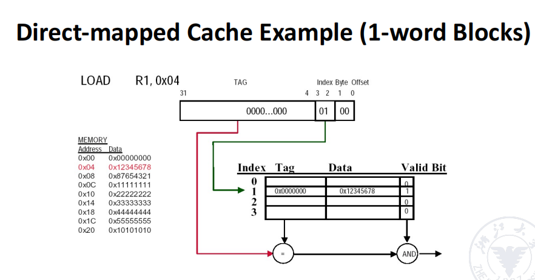
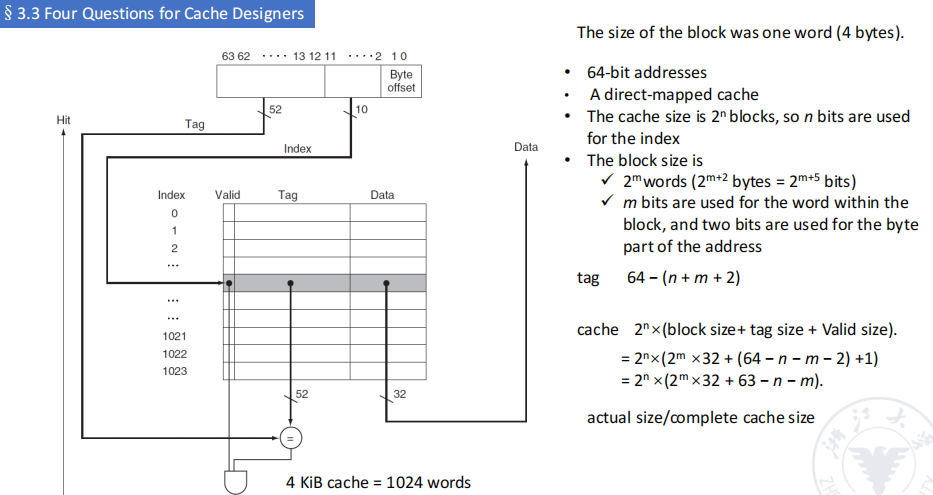
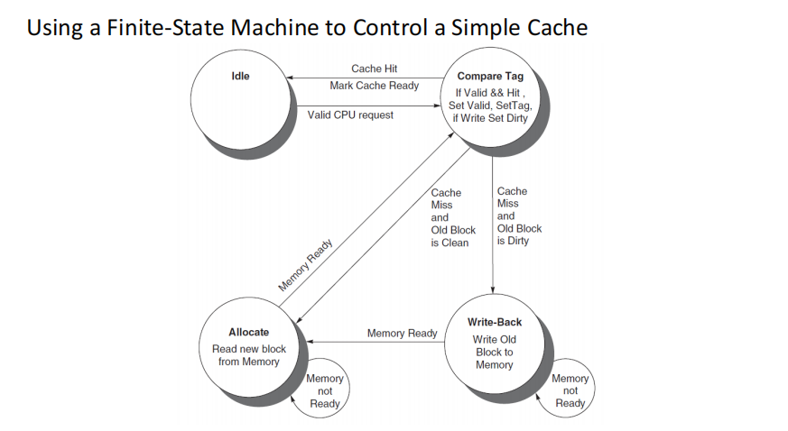

Chapter3
Chapter 3 Memory Hierarchy
3.1 Introduction
我们也通过load/store指令对内存进行操作。
对于处理器中的各个内存，最快的是CPU的register（最近），但是其size也越小，造价也更昂贵。
Cache
cache，其意义是"a safe place to store or hide things".
地址数据离开处理器最先遇到的内存(参见上图)，会使用缓冲区来重用常见的数据项。
上学期讲过的定义，hit/miss分别代表处理器能不能在cache中找到所寻找的data item。
Block/Line Run
一组固定大小的数据，包含requested word，从main memory中提取并放入cache中。
就算仅需要一个block中的requested word，也是以block形式传输的。
局部性（Locality）
- 时间局部性：被访问的块短时间又会被访问，例如迭代的
i++的i - 空间局部性：邻近空间的块会在紧邻的时间被访问，例如数组
miss
未命中的时间取决于：
- Latency（延迟）:取到数据块中第一个字的时间
- Bandwith（带宽）：取到剩余字的时间
3.2 Technology Trend and Memory Hierarchy
提升速度的方式是利用局部性。
金字塔的图形，构建细分的内存存储结构。
3.3 Four Questions for Cache Designers
- 直接映射：cache中的每个block只能存储main memory中特定地址的数据，例如cache中第0个block只能存储main memory中第0、16、32、48...地址的数据。
- 全相联：cache中任何位置都可以存储任何地址的数据，就像是电影院有位置我们就坐，空间利用率高一点，但是查找时间会变长。
- 合并一下：组相联：cache中的block被分为若干组，组内全相联，组间直接映射。好比电影院我们只能在特定的排上就坐，但是别人找我们就更快了。这样实现了更高的空间利用率的同时，也提高了查找速度。
Q2: Block Identification
tag满足且valid视为hit，否则miss。

同理，全相联就是都可以进，只要能hit其中任何一个就是hit：
Example 1: How many total bits are required for a direct-mapped cache with 16 KiB of data and four-word blocks, assuming a 64-bit address?

首先我们知道，cache中共有16KiB = 212words，即有210个block，n=10。block size为4words即m=2，因此tags为64-(n+m+2)=64-14=50bits。
cache size = 2n*(block size + tag + valid bit) = 179Kib
Example 2: Consider a cache with 64 blocks and a block size of 16 bytes. To what block number does byte address 1200 map?

Q3: Block Replacement
- 最直接，大道至简的算法：随机算法
- LRU（Least Recently Used）算法：最近最少使用，即最近一次使用时间最远的数据被替换。
- FIFO（First In First Out）算法：先进先出，即最早进入cache的数据被替换。
- OPT（Optimal）算法：最优算法，即未来最不会被使用的数据被替换。但是这个算法需要知道未来，因此实际上不可行。
hit也算使用
OPT：孩子们我开了。
堆栈型替换算法：\(B_t(n)\)是\(B_t(n+1)\)的子集，即当n增大时，"更能命中"（即\(B_t(n)\)命中，\(B_t(n+1)\)一定命中）。
LRU算法是堆栈型替换算法，FIFO则不是。
换句话说，随着n的增大，替换型算法的\(B_t(n)\)的命中率是递增的。
很容易想到对LRU的实现要实现一个判断谁least use的判断逻辑，下面展现了逻辑对于大规模的情况，复杂度高到不太能接受。
也可以使用堆栈来实现
Q4: Write Policy
分类讨论：hit/miss分开讨论怎么写
hit
- write through：写cache的同时写回内存，保证cache和内存中数据的一致性。
- write back：写cache，不写回内存，当cache中的数据被替换时，再写回内存。
但是write through写memory有够慢的，我们增设一个buffer来缓存写回的数据。
miss
- write allocate：写miss时，将数据从memory中读入cache，再进行写操作。
- no write allocate：写miss时，直接写memory，不进行cache操作。
write back一般对应write allocate，write through对应no write allocate。
read
- read through: 直接读memory
- read allocate: 读miss时，将数据从memory中读入cache，再进行读操作。
直读与读分配。
dirty位表示刚刚写过，同时也没有写回memory。
3.4 Memory System Performance
3.5 Virtual Memory
我们之前的讨论集中在cache部分，现在我们梳理一下其他部分，如虚拟内存。
virtual memory即虚拟内存，是内存利用磁盘给出的假象，程序认为访问的是连续的空间，实际上其物理地址可能是不连续的。
virtual memory使用分段+分页技术。
- 分页：大小固定
- 分段：大小不固定
页表拥有一个虚拟地址到物理地址的映射，有索引。
page table计算：
example:32-bit virtual address, 4KB pages, 4 bytes per page table entry
\(\frac{2^{32}}{2^{12}}*2^2=2^{22}byte\)